F.12 Coaxial Circles — Folios
Archival manuscript scans and diplomatic transcriptions from seelig ’s
notebooks for F.12 (Coaxial Circles) (SeeligNotebooks ).
Folio 0072 (Page 1 of 12): Coaxal Circles & Electromagnetics Introduction
[Folio 0072]
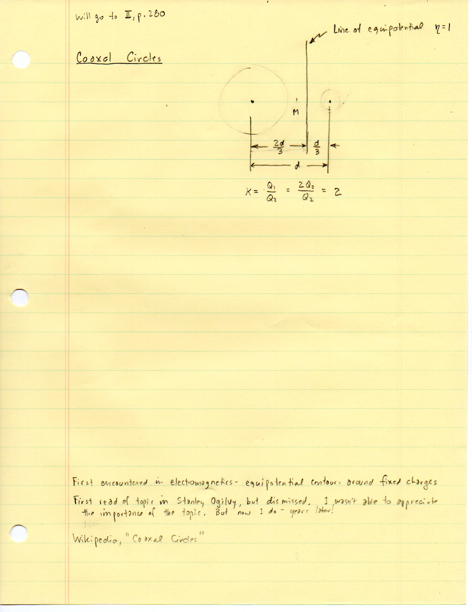
Folio 0072 0072.jpg resources/seelig/12_coaxial-circles
Diplomatic Mathematical & Geometric Transcription
Diplomatic Transcription — Folio 0072 (0072.jpg
Introduces coaxal circles via equipotentials around two charges (\(K = Q_1/Q_2 = 2\) ), citing Stanley Ogilvy and Wikipedia, with radical axis \(\eta = 1\) .
\[P_1 = \left(\frac{k - 1}{k + 1}r,\, 0\right), \qquad P_2 = \left(\frac{k + 1}{k - 1}r,\, 0\right), \qquad M' = \frac{k^2 + 1}{k^2 - 1}r, \qquad R = \frac{2 k}{k^2 - 1}r\]
Editorial & Symbolic Notes
Archival scan 0072.jpg F.12 Coaxial Circles (Page 1 of 12). Companion OpenDocument worksheet(s): Coaxial Circles Coaxal Circle Table Apollonian Circles Radical Axes III.35 III.36
Folio 0073 (Page 2 of 12): Template Table for K = 2
[Folio 0073]
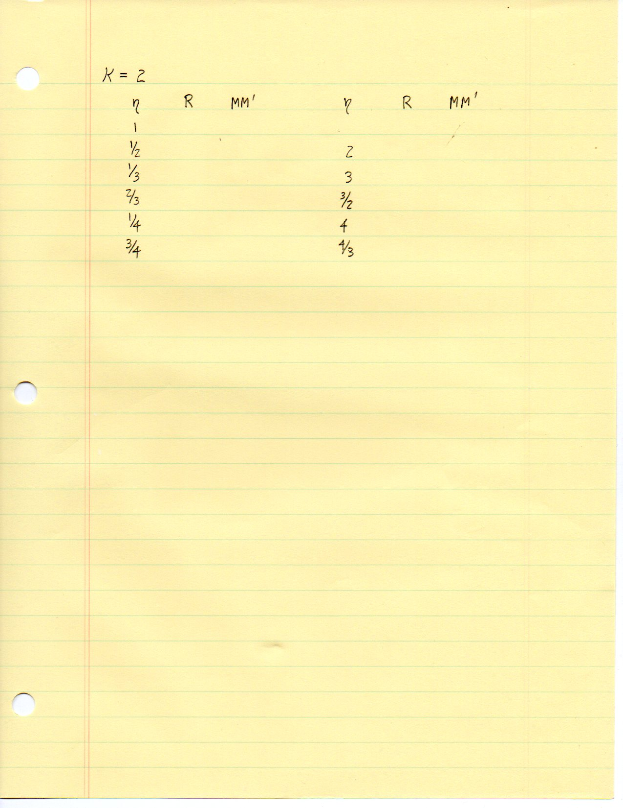
Folio 0073 0073.jpg resources/seelig/12_coaxial-circles
Diplomatic Mathematical & Geometric Transcription
Diplomatic Transcription — Folio 0073 (0073.jpg
Sets up table columns \(\eta, R, MM'\) for \(\eta \in \{1, 1/2, 1/3, 2/3, 1/4, 3/4\}\) and their reciprocals.
\[x^2 + y^2 - 2 c_x x + r^2 = 0, \qquad E_{\text{TOT}} = k Q_1 \frac{x - x_1}{|x - x_1|^3} + k Q_2 \frac{x - x_2}{|x - x_2|^3} = 0\]
Editorial & Symbolic Notes
Archival scan 0073.jpg F.12 Coaxial Circles (Page 2 of 12). Companion OpenDocument worksheet(s): Coaxial Circles Coaxal Circle Table Apollonian Circles Radical Axes III.35 III.36
Folio 0074 (Page 3 of 12): Plan of Attack (Friday April 24, 2015)
[Folio 0074]
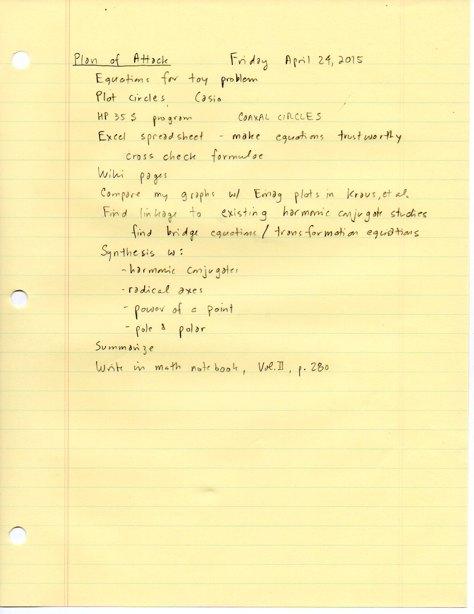
Folio 0074 0074.jpg resources/seelig/12_coaxial-circles
Diplomatic Mathematical & Geometric Transcription
Diplomatic Transcription — Folio 0074 (0074.jpg
Outlines the HP-35s COAXAL CIRCLES program, Excel verification, Kraus EMag comparison, and synthesis with harmonic conjugates, radical axes, and pole-polar duality (for Vol. II, p. 280).
\[P_1 = \left(\frac{k - 1}{k + 1}r,\, 0\right), \qquad P_2 = \left(\frac{k + 1}{k - 1}r,\, 0\right), \qquad M' = \frac{k^2 + 1}{k^2 - 1}r, \qquad R = \frac{2 k}{k^2 - 1}r\]
Editorial & Symbolic Notes
Archival scan 0074.jpg F.12 Coaxial Circles (Page 3 of 12). Companion OpenDocument worksheet(s): Coaxial Circles Coaxal Circle Table Apollonian Circles Radical Axes III.35 III.36
Folio 0075 (Page 4 of 12): Numerical Table for k = 1/2, 1/3, 1/4
[Folio 0075]
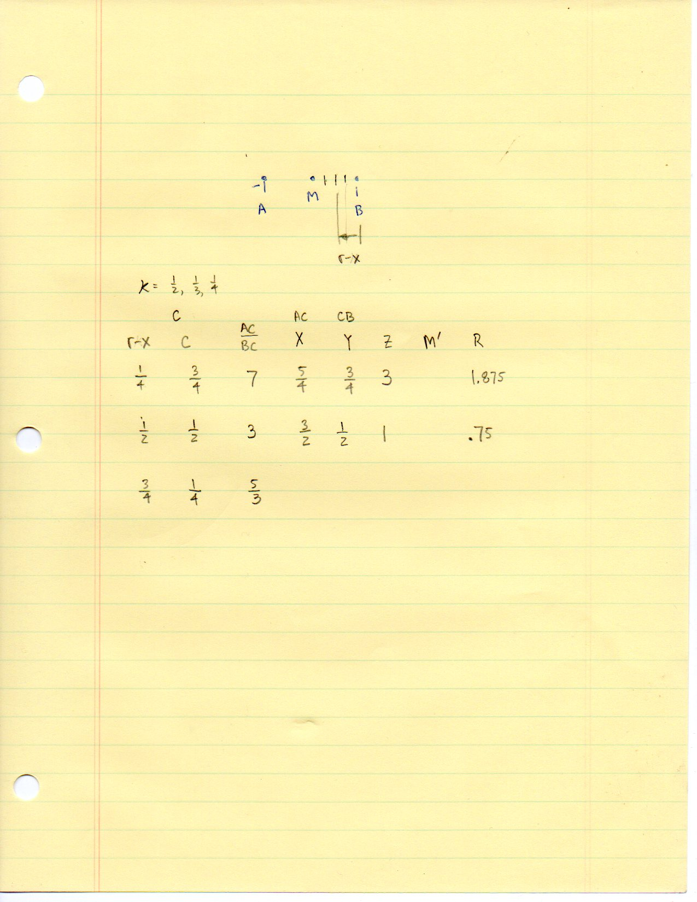
Folio 0075 0075.jpg resources/seelig/12_coaxial-circles
Diplomatic Mathematical & Geometric Transcription
Diplomatic Transcription — Folio 0075 (0075.jpg
Computes \(r-x, C, AC/BC, X, Y, Z, M'\) , and \(R\) on segment \(AB\) .
\[x^2 + y^2 - 2 c_x x + r^2 = 0, \qquad E_{\text{TOT}} = k Q_1 \frac{x - x_1}{|x - x_1|^3} + k Q_2 \frac{x - x_2}{|x - x_2|^3} = 0\]
Editorial & Symbolic Notes
Archival scan 0075.jpg F.12 Coaxial Circles (Page 4 of 12). Companion OpenDocument worksheet(s): Coaxial Circles Coaxal Circle Table Apollonian Circles Radical Axes III.35 III.36
Folio 0076 (Page 5 of 12): Six Landmark Points P_1..P_6 on the Equipotential Circle
[Folio 0076]
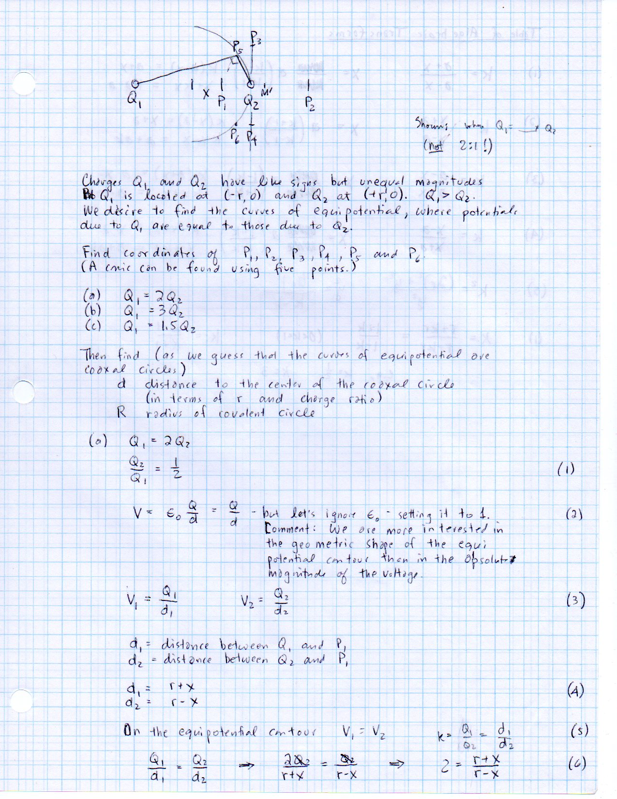
Folio 0076 0076.jpg resources/seelig/12_coaxial-circles
Diplomatic Mathematical & Geometric Transcription
Diplomatic Transcription — Folio 0076 (0076.jpg
Defines \(P_1..P_6\) around charges \(Q_1(-r,0)\) and \(Q_2(+r,0)\) on blue grid paper.
\[P_1 = \left(\frac{k - 1}{k + 1}r,\, 0\right), \qquad P_2 = \left(\frac{k + 1}{k - 1}r,\, 0\right), \qquad M' = \frac{k^2 + 1}{k^2 - 1}r, \qquad R = \frac{2 k}{k^2 - 1}r\]
Editorial & Symbolic Notes
Archival scan 0076.jpg F.12 Coaxial Circles (Page 5 of 12). Companion OpenDocument worksheet(s): Coaxial Circles Coaxal Circle Table Apollonian Circles Radical Axes III.35 III.36
Folio 0077 (Page 6 of 12): Table of Algebraic Transforms (1)–(5)
[Folio 0077]
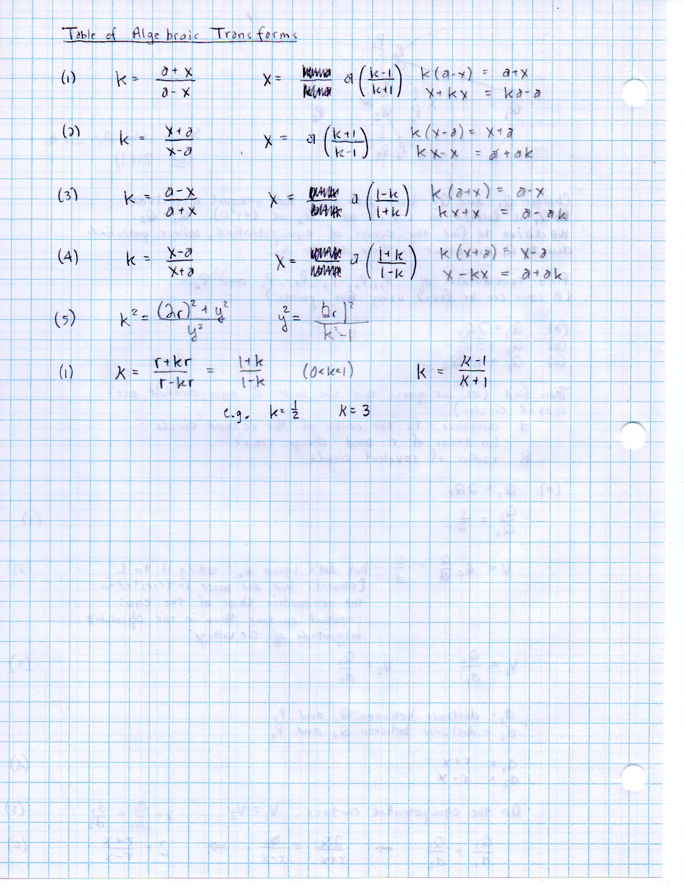
Folio 0077 0077.jpg resources/seelig/12_coaxial-circles
Diplomatic Mathematical & Geometric Transcription
Diplomatic Transcription — Folio 0077 (0077.jpg
Catalogs the five fractional linear transforms relating \(k, a, x\) and \(y^2 = (2r)^2/(k^2-1)\) .
\[x^2 + y^2 - 2 c_x x + r^2 = 0, \qquad E_{\text{TOT}} = k Q_1 \frac{x - x_1}{|x - x_1|^3} + k Q_2 \frac{x - x_2}{|x - x_2|^3} = 0\]
Editorial & Symbolic Notes
Archival scan 0077.jpg F.12 Coaxial Circles (Page 6 of 12). Companion OpenDocument worksheet(s): Coaxial Circles Coaxal Circle Table Apollonian Circles Radical Axes III.35 III.36
Folio 0078 (Page 7 of 12): Exact Coordinates for k = 2 (P_1, P_2, M’, R, P_3, P_4)
[Folio 0078]
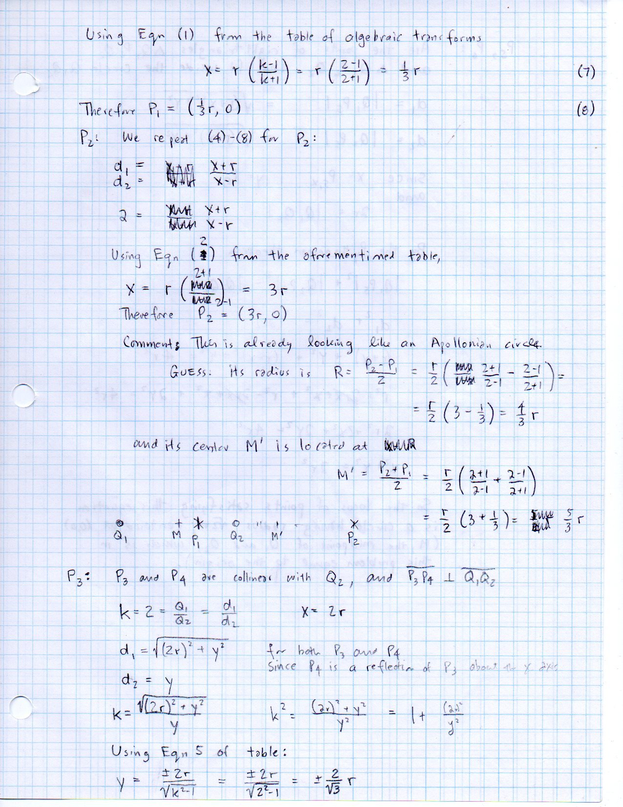
Folio 0078 0078.jpg resources/seelig/12_coaxial-circles
Diplomatic Mathematical & Geometric Transcription
Diplomatic Transcription — Folio 0078 (0078.jpg
Derives \(P_1 = (\frac{1}{3}r, 0), P_2 = (3r, 0), R = \frac{4}{3}r, M' = \frac{5}{3}r\) , and \(P_3, P_4 = (r, \pm \frac{2}{\sqrt{3}}r)\) .
\[P_1 = \left(\frac{k - 1}{k + 1}r,\, 0\right), \qquad P_2 = \left(\frac{k + 1}{k - 1}r,\, 0\right), \qquad M' = \frac{k^2 + 1}{k^2 - 1}r, \qquad R = \frac{2 k}{k^2 - 1}r\]
Editorial & Symbolic Notes
Archival scan 0078.jpg F.12 Coaxial Circles (Page 7 of 12). Companion OpenDocument worksheet(s): Coaxial Circles Coaxal Circle Table Apollonian Circles Radical Axes III.35 III.36
Folio 0079 (Page 8 of 12): Right-Triangle Locus for P_5, P_6
[Folio 0079]
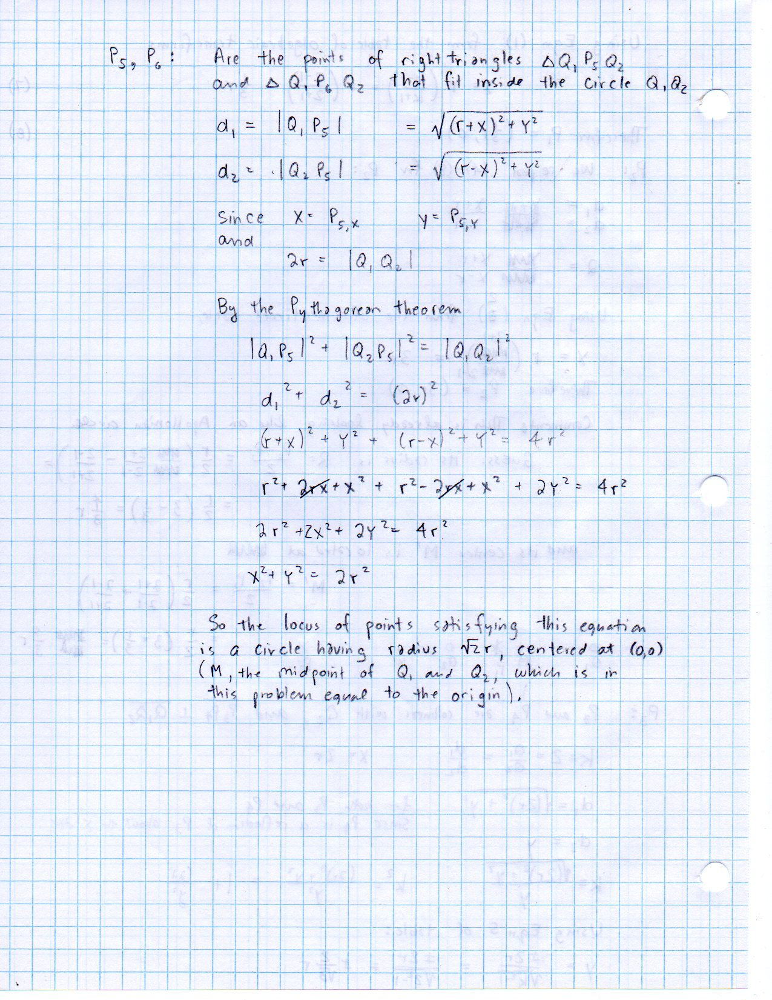
Folio 0079 0079.jpg resources/seelig/12_coaxial-circles
Diplomatic Mathematical & Geometric Transcription
Diplomatic Transcription — Folio 0079 (0079.jpg
Proves that right triangles \(\triangle Q_1 P_5 Q_2\) satisfy \(d_1^2 + d_2^2 = (2r)^2\) , lying on the circle \(x^2 + y^2 = 2r^2\) of radius \(\sqrt{2}r\) .
\[x^2 + y^2 - 2 c_x x + r^2 = 0, \qquad E_{\text{TOT}} = k Q_1 \frac{x - x_1}{|x - x_1|^3} + k Q_2 \frac{x - x_2}{|x - x_2|^3} = 0\]
Editorial & Symbolic Notes
Archival scan 0079.jpg F.12 Coaxial Circles (Page 8 of 12). Companion OpenDocument worksheet(s): Coaxial Circles Coaxal Circle Table Apollonian Circles Radical Axes III.35 III.36
Folio 0080 (Page 9 of 12): 1D Collinear Electric Field Vector Formulation
[Folio 0080]
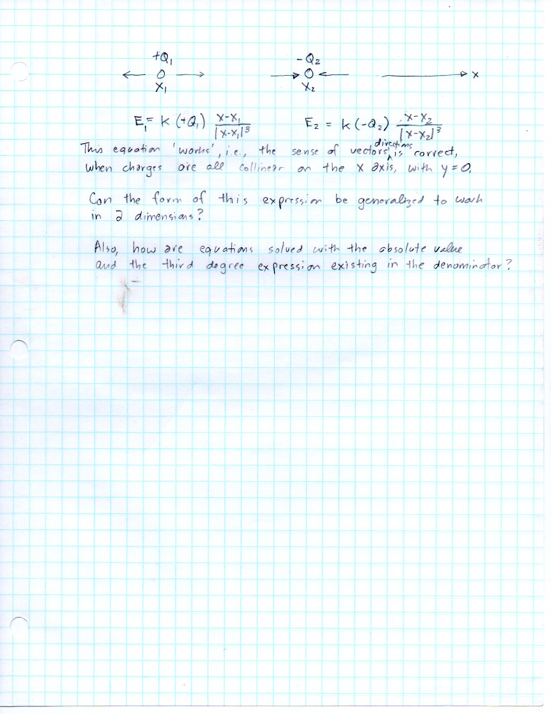
Folio 0080 0080.jpg resources/seelig/12_coaxial-circles
Diplomatic Mathematical & Geometric Transcription
Diplomatic Transcription — Folio 0080 (0080.jpg
Writes \(E_i = k Q_i (x - x_i)/|x - x_i|^3\) to preserve vector sign along the line of charges.
\[P_1 = \left(\frac{k - 1}{k + 1}r,\, 0\right), \qquad P_2 = \left(\frac{k + 1}{k - 1}r,\, 0\right), \qquad M' = \frac{k^2 + 1}{k^2 - 1}r, \qquad R = \frac{2 k}{k^2 - 1}r\]
Editorial & Symbolic Notes
Archival scan 0080.jpg F.12 Coaxial Circles (Page 9 of 12). Companion OpenDocument worksheet(s): Coaxial Circles Coaxal Circle Table Apollonian Circles Radical Axes III.35 III.36
Folio 0081 (Page 10 of 12): Zero-Field Point Between Like Charges
[Folio 0081]
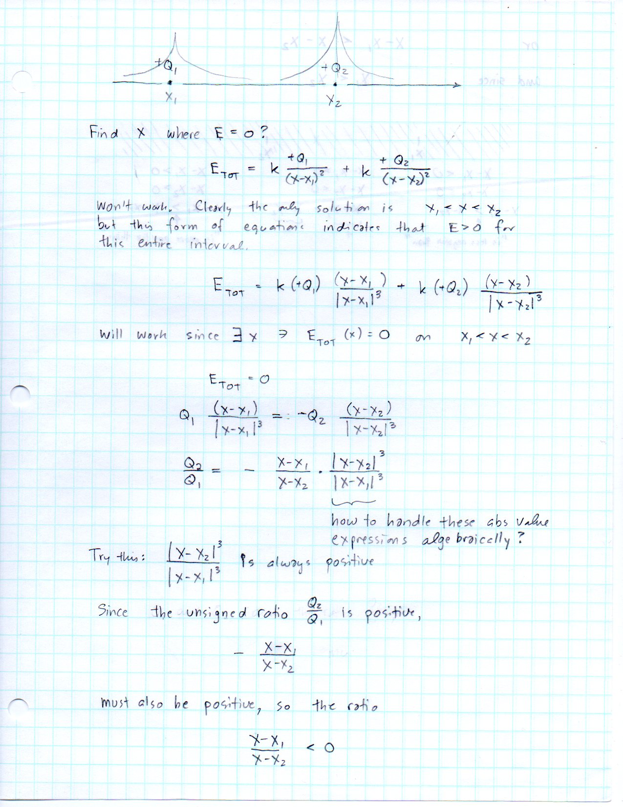
Folio 0081 0081.jpg resources/seelig/12_coaxial-circles
Diplomatic Mathematical & Geometric Transcription
Diplomatic Transcription — Folio 0081 (0081.jpg
Sets \(E_{\text{TOT}} = 0\) for \(+Q_1, +Q_2\) and forms the cubic/absolute-value ratio.
\[x^2 + y^2 - 2 c_x x + r^2 = 0, \qquad E_{\text{TOT}} = k Q_1 \frac{x - x_1}{|x - x_1|^3} + k Q_2 \frac{x - x_2}{|x - x_2|^3} = 0\]
Editorial & Symbolic Notes
Archival scan 0081.jpg F.12 Coaxial Circles (Page 10 of 12). Companion OpenDocument worksheet(s): Coaxial Circles Coaxal Circle Table Apollonian Circles Radical Axes III.35 III.36
Folio 0082 (Page 11 of 12): Sign Interval Analysis for x_1 < x < x_2
[Folio 0082]
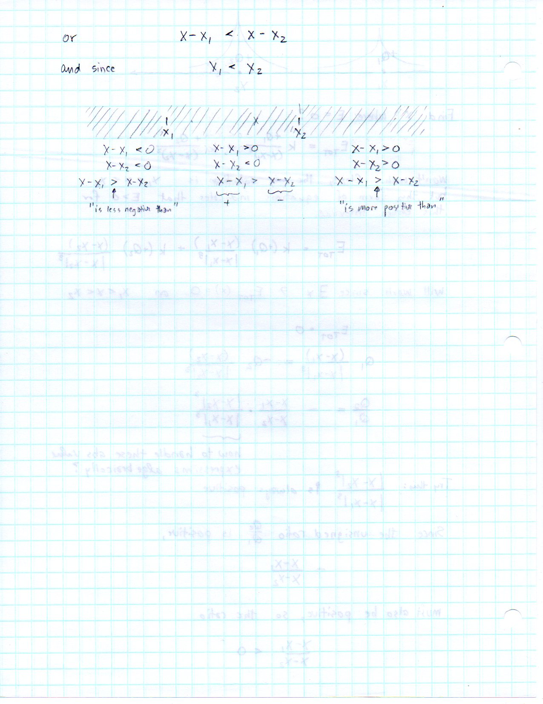
Folio 0082 0082.jpg resources/seelig/12_coaxial-circles
Diplomatic Mathematical & Geometric Transcription
Diplomatic Transcription — Folio 0082 (0082.jpg
Tests sign cases of \(x - x_1\) and \(x - x_2\) across the three collinear intervals.
\[P_1 = \left(\frac{k - 1}{k + 1}r,\, 0\right), \qquad P_2 = \left(\frac{k + 1}{k - 1}r,\, 0\right), \qquad M' = \frac{k^2 + 1}{k^2 - 1}r, \qquad R = \frac{2 k}{k^2 - 1}r\]
Editorial & Symbolic Notes
Archival scan 0082.jpg F.12 Coaxial Circles (Page 11 of 12). Companion OpenDocument worksheet(s): Coaxial Circles Coaxal Circle Table Apollonian Circles Radical Axes III.35 III.36
Folio 0083 (Page 12 of 12): Alternative Coordinate Setup (-d/2, +d/2)
[Folio 0083]
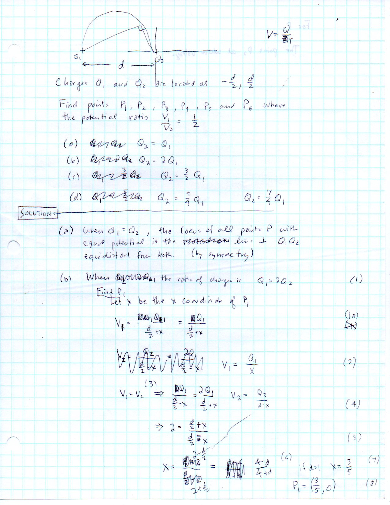
Folio 0083 0083.jpg resources/seelig/12_coaxial-circles
Diplomatic Mathematical & Geometric Transcription
Diplomatic Transcription — Folio 0083 (0083.jpg
Solves for \(P_1\) with charges at \(\pm d/2\) and potential ratio \(V_1/V_2 = 1/2\) .
\[x^2 + y^2 - 2 c_x x + r^2 = 0, \qquad E_{\text{TOT}} = k Q_1 \frac{x - x_1}{|x - x_1|^3} + k Q_2 \frac{x - x_2}{|x - x_2|^3} = 0\]
Editorial & Symbolic Notes
Archival scan 0083.jpg F.12 Coaxial Circles (Page 12 of 12). Companion OpenDocument worksheet(s): Coaxial Circles Coaxal Circle Table Apollonian Circles Radical Axes III.35 III.36